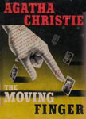
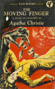
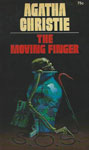
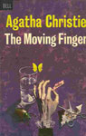
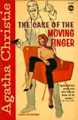
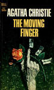

The Burtons, brother and sister, arrive in a small village soon receiving an anonymous letter accusing them of being lovers - not siblings. They are not the only ones in the village to receive such vile letters. A prominent resident is found dead with one such letter found next to her.
This novel features the elderly detective Miss Marple in a relatively minor role, "a little old lady sleuth who doesn't seem to do much". She enters the story after the police have failed to solve the crime in the final quarter of the book, and in a handful of scenes.
The novel was well-received when it was published: "Agatha Christie is at it again, lifting the lid off delphiniums and weaving the scarlet warp all over the pastel pouffe." One reviewer noted that Miss Marple "sets the stage for the final exposure of the murderer." Another said this was "One of the few times Christie gives short measure, and none the worse for that."
The title of the novel is, like that of many other works by Agatha Christie, a quotation from poetry. "The Moving Finger" are the first words of The Rubaiyat, by the medieval Persian poet Omar Khayyam.






Screen Versions
The 1985 television adaptation, with Joan Hickson as Miss Marple, was filmed in Hoxne, Suffolk and directed by Roy Boulting. His brother Peter Cotes (born Sydney Boulting) directed the original production of Christie's famous play The Mousetrap in 1952.
A second adaptation was made with Geraldine McEwan as Miss Marple and was filmed in Chilham, Kent. This adaptation changes the personality of Jerry from the novel and sets the story a little later than the novel is set, per a review of the episode: "Miss Marple, observing the tragic effects of these missives on relationships and reputations, is practically in the background in this story, watching closely as a nihilistic young man comes out of his cynical, alcohol-laced haze to investigate the source of so much misery" and is set shortly after World War II.


John Keenan
-